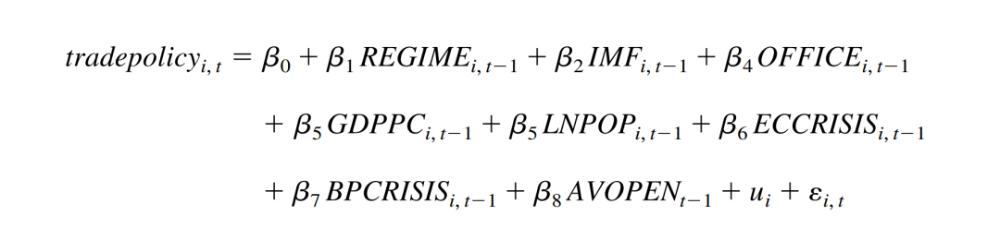
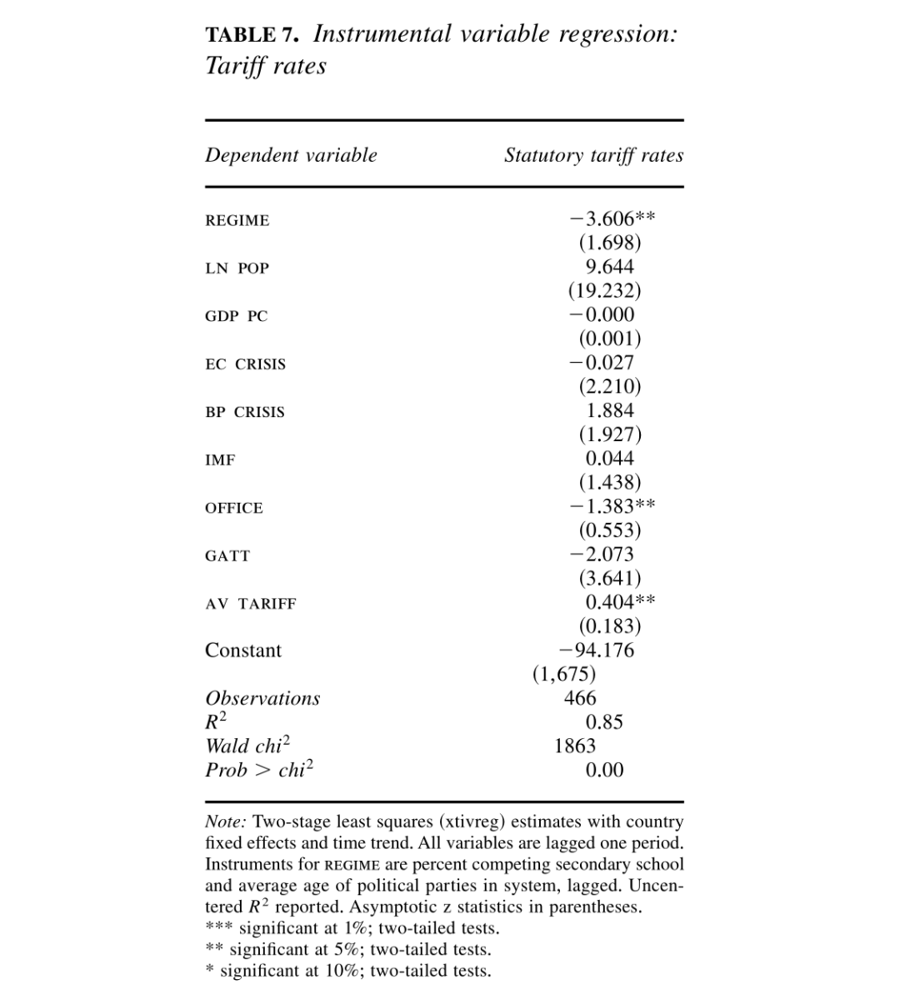

收录于合集 #IPE研究 1个

作品简介
作者： 海伦· 米尔纳（Helen V. Milner），普林斯顿大学政治与国际事务教授，普林斯顿公共和国际事务学院尼豪斯全球化与治理中心主任，2012-14年担任国际政治科学协会（IPSA）主席，2020-2021年任期国际研究协会（ISA）主席。就国际与比较政治经济、国内政治和外交政策联系及全球化对国内政治的影响等问题撰写了大量文章。
编译： 王星澳（上海国际问题研究院硕士研究生）
来源： Milner, H. V., & Kubota, K. (2005). Why the Move to Free Trade? Democracy and Trade Policy in the Developing Countries. International Organization , 59(1), 107-143. http://doi.org/10.1017/S002081830505006X.
归档： 《国际关系前沿》2021年第10期，总第37期。
内容摘要
日益增长的国际贸易是全球化的重要构成。许多发展中国家贸易政策的自由化促进了这一增长趋势。而国际层面的民主化运动伴随着这一进程。本研究认为，二者存在如下联系：政治体制的民主化削弱了政府利用贸易壁垒获取政治支持的能力。随着民主化发展，劳动力资源丰富国家的政治领导人更倾向于低关税壁垒政策。1970-1999年间发展中国家的实证数据支持了这一主张。在控制诸多因素的情况下，政权更迭形式的民主转型与贸易自由化存在相关性。经济危机和外部危机等对经济改革的传统解释不再有力。在这一时期，民主化促进了全球化的发展。
文章导读
20世纪70年代以来，全球化得到了广泛的发展，使得约40亿人融入了世界经济。自1980年代以来，大多数发展中国家的贸易及工业政策转变为管控更少的出口导向型贸易体制。对这一变化，学界主要强调三个影响因素。一些学者认为，经济危机迫使国家进行自由化等改革。另一些则声称，这一变化归因于来自美国、西方或国际机构的外部压力。最后，还有一些学者将经济自由化发展归功于新自由主义政策思想的传播。本文审视了这些观点，并引入了另一个重要但常被低估的因素——政权的民主程度。
01
贸易自由化与民主的数据
1970年至1999年，发展中国家的贸易政策发生了巨大变化，主要体现为以下5点。其一，发展中国家的平均关税水平大幅下降；其二，法定关税税率大幅下降；其三，非关税壁垒覆盖率大幅减少；其四，开放程度指标大幅上升；其五，贸易占各国经济的比例大幅增加。也就是说，这一时期发展中国家的贸易自由化程度大幅上升。
作者利用Polity IV的数据，使用Gurr等，Jaggers与Gurr和Marshall与Jaggers构建的21点政治指数，对政权类型进行评估。其结果是，二者都显示出，发展中国家的民主化进程开始于1970年后期，较贸易自由化早近10年。也就是说， 民主化进程先于贸易自由化。
02
贸易自由化与民主化：一个论证
本节主要内容：发展中国家的民主化运动部分解释了发展中国家贸易自由化程度的提升。民主化使得原先缺乏政治权利的人群得以表达其政治诉求——而他们恰好从贸易自由中获益更多。由于选民群体的扩大，领导人难以通过贸易壁垒获取足够的政治支持，因而选择更加自由化的贸易政策，以获取倾向自由贸易政策的群体的支持。
（一）民主化使领导人倾向于贸易自由政策
第一，民主化迫使领导人改变政策以迎合选民。本研究认为，“民主化”意味着通过竞争性普选（universal suffrage in contested elections）实施多数统治（majority rule）的政治发展过程。在政治领袖的选举过程中，参与选举的一组行为者称为“选民”（the selectorate）。在民主制国家中，选民指的是那些具有选举资格的公民。而在非民主制国家中，选民则是支持政治领袖留任的那部分人群。 胜选联盟 是选民中的一小部分。为实现连任，现任政府需要争取胜选联盟的支持。在民主国家，胜选联盟是选民中的简单多数。
民主化意味着选民和胜选联盟规模的扩大，而这将改变领导人可选择的最佳政策。这种扩张意味着选民构成的变化，进而导致领导人倾向政策的变化。在此情况下，为了留任，领导人必须调整其政策，以满足规模扩大后的选民的偏好。对领导人而言，贸易保护的最佳水平随着获胜联盟的规模扩大而下降。 当民主化发生时，不论有无公众督催，政治领导人都会改变其贸易政策，从而获取更多选民的支持。
第二，民主化使得支持贸易自由化的群体成为选民。相对于劳动力，发展中国家更缺乏资本。而因为这些国家绝大多数的贸易对象是富裕发达国家，其进口竞争部门往往属于资本密集型产业，所以贸易保护主义往往使得那些占有稀缺资本的个体受益。而自由贸易政策可以使那些拥有丰富劳动力的部门获得更多收入，并且降低进口价格。也就是说，贸易自由化可以增加发展中国家工人和穷人的收入，同时降低进口成本，使他们获益。可见， 民主化将赋予一批拥护低贸易保护水平的人群投票权 。 因而，民主化意味着领导人更倾向于低关税壁垒政策，以吸引那些缺少资本且会从更低贸易保护水平中获益群体的支持。
总而言之，在发展中国家，专制政府依赖于一小部分选民的支持，而并不对全体国民负责，因而可以采取大量的保护主义政策。而民主化则会打破原有的支持保护主义政策的联盟，进而改变现状。随着选民人数增加，领导人会发现调整贸易政策更符合自身政治利益。随着发展中国家选民占有的平均资本量越来越少，高水平的贸易壁垒不再能弥补他们因贸易保护主义而产生的收入损失和高昂成本。因而，随着政治体制变得更加民主以及领导人建立新的支持联盟，政治竞争将促使领导人减少对贸易的限制。
（二）贸易自由化使低收入群体获益
假定工人和穷人从贸易自由化中获益是否合理？他们不会因为从中受损而反对它么？要回答这个问题，就有必要区分贸易自由化改革与其他经济改革。不同的经济改革会导致不同的分配结果。许多改革，比如私有化、养老金改革、增加劳动力市场的灵活性等，可能会对工人产生严重的负面影响，因而招致其强烈反对。相比而言，贸易自由化的分配结果不会伤害到工人或者农村的贫困人口。墨西哥、阿根廷和委内瑞拉的经验显示，一个国家的工人和及其组织可能在强烈反对其他经济改革的同时，支持（或至少不反对）贸易自由化。
其他政治学家指出， 即使情况变得更糟，选民依旧有可能支持政府，因为他们认为现今的萧条意味着将来的繁荣。 也就是说，政治领导人不会因为推行贸易自由化而失去支持，而公众经常愿意支持施行贸易自由化的政权。即使经济增长在短期内放缓，他们也会因为期待未来的收益而选择继续支持。
03
实证分析
本节主要内容：本节尝试验证民主制度与贸易自由程度的关系，同时尝试控制主要的变量，包括经济危机、领导人及其观念的变更以及外部压力。数据集是一个时间序列截面（TSCS）数据，包含179个发展中国家、领土和属国自1970至1999年的数据。主要假设是，在同等条件下，更民主的国家拥有更低水平的关税壁垒；民主程度的增加会降低关税壁垒。回归分析的结果支撑了这一假设。
（一）自变量：政权类型
本文的主要自变量是在时间t上，一个国家的政治体制类型。政治体制变量来自于Polity Ⅲ和Polity Ⅳ，它们的数据涵盖了177个国家自1800年至1999年的政治特征。为了衡量每个国家的体制类型，本文使用Gurr等和Jaggers和Gurr所构建的指数。这个指数综合了五个变量的数据，抓住了民主国家和专制国家的制度性差异。一，国家行政长官选举过程的竞争程度；二，选举过程的开放程度；三，制度性约束对行政长官决策权的限制程度；四，国家内政治参与的竞争程度；五，限制性规则对政治参与的约束程度。这五个变量的每一项都直接关系到本文所强调的政治竞争和选民规模。
根据Gurr等和Jaggers和Gurr的研究，这些数据用于创建每个国家的11点民主特质和专制特质的指数。这两个指标的差（民主特质- 专制特质），形成一个政权类型的总结的测量（REGIME），其取值范围从-10（高度专制）到10（高度民主）。这一测量关注到了民主国家之间以及专制国家之间的内部差异。
为了增加分析的鲁棒性，本文还使用其他两种政权类型的测量方式。一方面，利用Geddes的专制国家数据，本文构建了一个1至8的变量，其中8代表民主程度最高。值得注意的是，这个方法比Polity更加粗糙，因为它无法对民主国家进行区分。
另一方面，本研究使用了Alvarez等和Przeworski等构建的二分法。它们仅将那些领导人更替时采取公平且自由竞争方式产生高级政治官员的政体归类为民主政体。这一测量方式相当生硬且受到批评，因为它假设民主转型在一年内发生。此外，它也没有对专制以及民主政体内部的区别进行区分。但它与其他两个测量存在高度相关性。
（二）因变量：贸易政策
本文的核心因变量是在年份t中一个国家的贸易政策（trade policy）的保护或开放程度。不过，由于直接测量存在困难，本文使用两种替代方式来测量贸易政策。
第一，一个国家的未加权平均法定关税税率。它显示出随着民主转型，关税税率有所下降。不过这些数据的测量很糟糕。第二，将贸易体制分为“开放”和“封闭”的二分变量。这一测量方式考虑了多种形式的保护主义，因而其更加综合。使用这两种测量方式可以让本文对贸易政策的历时变化有一个更全面的认识。如果二者都表明民主与贸易自由化相关，则加强了本文的主张。
（三）其他控制变量
贸易政策的变化可能是因为政治体制变化以外的因素引起的，因此本文还需对此进行控制。
经济因素方面，人们常说小国比大国更倾向于开放。因而，本文使用人口的自然对数的滞后值（LN POP），即人口规模，测量国家大小的影响。更发达的国家往往有更低的贸易壁垒。本文利用人均实际GDP（GDP PC）测量经济发展水平的影响。
外部因素方面，首先是经济危机。本文使用两种经济危机的概念，第一，若一国的通胀率同比增长超过25%以上，达到40%或以上，或者人均GDP同比下降了15%，说明存在危机（EC CRISIS=1）。第二，如果一个国家的外汇储备下降到少于三个月的进口额，则说明存在危机（BP CRISIS=1）。其次，来自国际金融机构的外部压力。本文使用显示这个国家是否为渡过危机刚刚签署了IMF协议的变量（IMF）以观察外部金融机构影响。再次，本文还规定若一国加入了GATT/WTO，将其编码为（GATT =1），以审视GATT/WTO的影响。
最后，本文利用能够表明该年所有发展中国家平均关税水平的变量（AV TARIFF）、该年所有国家平均开放水平的变量（AV OPEN），以审视国家间的竞争压力对世界各国的政治变化的影响。
政治领袖选择倾向方面，本文利用政府执政的年数（OFFICE），审视领导人对政策选择倾向变化的影响。
综上，估计政治制度与贸易政策关系的基本方程为：

（四）回归结果及分析

表7展示了回归结果。政权类型与法定关税税率之间呈现相当显著的负相关关系。这支持了本文的观点，即，即使修正可能的内生性，政权类型依然影响贸易政策。
政治因素方面，回归结果显示，经济危机对于开放程度并没有显著的影响。本文试图以各国在先前是否与IMF签署协议衡量外部压力对贸易自由的影响，而这一变量也不显著。本文最后的政治控制变量观察全球思想的变化。本文的测量措施较弱地展现了这一因素。本文考察了政府的任期，观察新政府是否更可能实施贸易政策改革。这一变量仅在关税税率的案例中才显著，而且其结果令人惊讶：在其他情况不变的情况下，政府执政时间越长，关税税率越低。贸易政策改革或许需要政治稳定和政府的政权稳定。政府是否为第一年执政的变量从未显著，证明总体而言，新政府要么没有新的贸易政策主张，要么缺乏实施的能力。
经济因素方面，回国结果显示，本文测量国家大小的变量（LOGPOP）总是显著的，但没有预期的影响力。正如人们所言，大国通常有更高的关税，但在同等情况下，它们更有可能实现自由化。经济发展水平通常很重要，但在发展中国家中，发展水平更高的国家往往有着更严格的贸易体制。
04
结论
本研究认为，政治体制的民主改革会带来贸易制度的自由化。发展中国家的领导人可能更迎合本国的富裕的人群，因为选出他们的选民十分有限。因而，他们选择对资本密集型产业施加贸易壁垒，由此将财富从非选民转移至选民手中。民主化意味着选民规模的扩大，它改变了领导人眼中的贸易壁垒最佳水平，促使领导人采取能够促进广大消费者或选民福祉的贸易政策。尽管贸易保护主义的利益集团依然在发展中国家具有重要影响力，其他倾向降低贸易壁垒的群体对政治领导人的重要性却提升了。
本文认为，民主化是外生的。但是，贸易政策可以对政治体制施加影响。尽管本文将所有的自变量都滞后了，并且加入了内生性测试，但这可能有一个更长期的影响。不过，大多数预测体制类型的模型都未将贸易政策或经济开放程度作为预测要素。本文的数据显示， 贸易政策并不促进民主发展。 政权类型的变化是贸易自由转型的有力解释，民主国家的关税壁垒通常更低。
一般而言，更民主的国家更倾向于向国际社会开放市场。因而，民主化可能推动了过去20年的全球化。在20世纪后期，民主国家或许更可能通过消除其保护性关税壁垒来融入世界经济。发展中国家中的新兴民主国家能否在全球化的世界中生存和繁荣，则是一个需要进一步研究的议题。
译者评述
本文在大量既有研究的基础上，通过扎实的数据对政治体制与贸易自由化水平之间的关系进行了系统性的分析，试图论证发展中国家政治制度的民主转型对贸易自由化的促进作用。其中作者通过采用相似变量分别进行回归，以验证模型鲁棒性的研究方法有效地提升了论证的说服力，值得学习。
不过，对于本文的结论，笔者提出以下三点思考。
第一，贸易自由化的发展更多是各国经济发展的结果。贸易自由化程度与经济发展水平有关，还是与民主程度有关？作者试图以定量分析的方式论证民主程度与贸易自由化水平的因果关系，然而定量的实证研究揭示的仅仅是相关性而非因果性。实际上作者在文中也坦言，他们难以解释为何印度长期保持高关税壁垒。如果因果关系的链条为，经济发展水平的提升对贸易自由化程度有着正向促进作用，那么本文的论述逻辑就存在很大的缺陷。以韩国为例，其经济高速发展期是在1987年实行民主转型前的20年（即所谓汉江奇迹）。而韩国的进出口贸易在这一期间高速发展。1961年，韩国经济对出口依赖程度为1.9%，对进口依赖程度为15%。而到了1981年，韩国进口依赖程度上升至33.5%，进口依赖程度上升至41.2%。亨廷顿在分析“第三波民主浪潮”时也表示，“在相当大的程度上，始于1974年的民主化浪潮是前二十年经济成长的产物。”[1]正如朴正熙所言：“真正的民主主义应该是最先确立健全的经济根基。”[2]民主化实际上是经济成长的结果，而这一时期贸易自由化的发展则是顺应了经济发展的需要，而无法单纯归因于各国“民主化”的发展。
第二，发展中国家之所以征收高额关税，恰恰是为了融入全球化的贸易体系。关税壁垒的存在可以有效地保护相对弱势的本国企业，为本国企业提升产品竞争力争取宝贵的时间。事实上，在RCEP、CPTPP等地区性自由贸易安排中，往往会给不发达国家较长的关税保护期，而这恰恰是为了鼓励这些国家积极加入自由贸易体系，避免这些国家因突然降低关税而丢失本国的经济主权。
第三，民主模式对贸易自由化存在反向作用。王建新深刻地指出，从分配的视角来看，当大多数人从全球化收益时，对全球化的支持力量就会超越反对力量，而当只有少数人从全球化受益时，反对力量就会超越支持力量，使得全球化减速。[3]在收益分配不均的情况下，一个国家内部的多数人可能会认为，低关税壁垒损害了他们的利益，因而支持那些主张贸易保护的领导人。印度最终选择不加入RCEP恰恰体现了这一点。在全球经济增长动力不足的当下，对这一现象的关注或许更具现实意义。
参考文献
[1] 亨廷顿：《第三波——20世纪后期的民主化浪潮》，上海：上海三联书店，1998年，第71页。转引自严海兵：《经济发展在韩国民主转型中的作用》，《太平洋学报》2006年第4期，第24页。
[2] 朴正熙：《朴正熙经济论著选》，延吉：延边大学出版社，1993年，第258页，转引自严海兵：《经济发展在韩国民主转型中的作用》，《太平洋学报》2006年第4期，第24页。
[3] 王建新：《全球化与民主:理论回顾与发展》，《国外理论动态》2017年第11期，第49页。
词汇整理
选民
the selectorate
进口替代工业
import substituting industrialization
竞争性普选
universal suffrage in contested elections
鲁棒性
robustness
责编 | 徐一凡 卫艺璇
排版 | 石寒冰 彭雯昕
文章观点不代表本平台观点，本平台评译分享的文章均出于专业学习之用, 不以任何盈利为目的，内容主要呈现对原文的介绍，原文内容请通过各高校购买的数据库自行下载。

国政学人
支持学术公益与知识传播
微信扫一扫赞赏作者 __赞赏
已喜欢，对作者说句悄悄话
取消 __
发送给作者
发送
最多40字，当前共字
上一页 1/3 下一页
长按二维码向我转账
支持学术公益与知识传播
受苹果公司新规定影响，微信 iOS 版的赞赏功能被关闭，可通过二维码转账支持公众号。